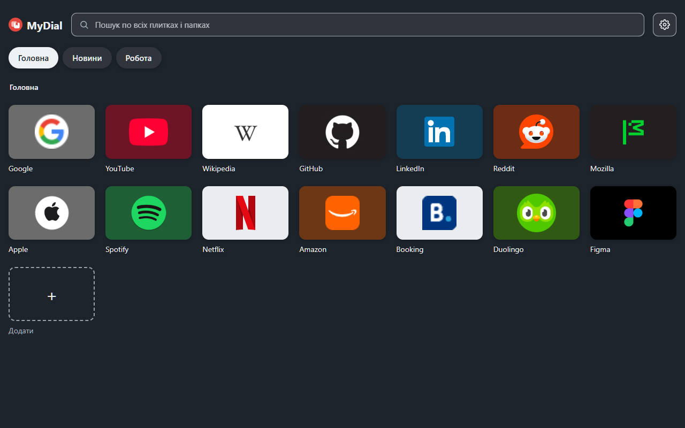

MyDial
MyDialMyDial — плитки закладок на новій вкладці
MyDial — розширення для Chrome, Edge і Brave. Воно показує на новій вкладці плитки з сайтами з вашої панелі закладок.

- Плитки — це ваші закладки. Змінили плитку — змінилась закладка, і навпаки.
- Папки закладок стають групами плиток.
- Свої значки, кольори плиток, теми і фон.
- Пошук по всіх плитках і папках.
- Без реклами, аналітики і свого сервера. Дані лишаються у вашому браузері.